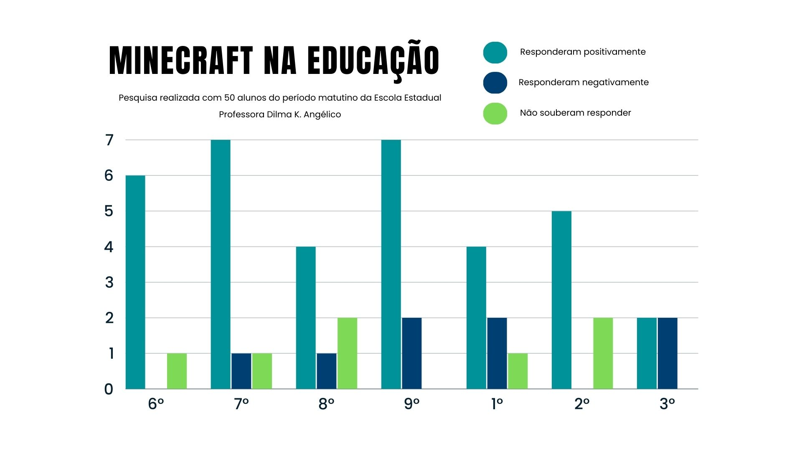

A implementação do método de ensino proposta deverá ocorrer por meio de negociações do órgão federal ou estadual junto a Mojang Studio (dona do Minecraft juntamente com a Microsoft) onde os envolvidos deveram discutir os termos do contrato como tempo de duração e valor (normalmente USD 5,00 por assinatura). Segundo dados da Secretaria de Educação do Paraná, neste ano estudam na rede pública estadual 908 mil alunos, portanto podemos estimar que esse projeto custaria aos cofres públicos R$ 4.607.918,00 (com base no dólar de 07/05/2024). O planejamento das aulas deve ocorrer por meio das disciplinas e seus conteúdos disponibilizados aos professores por meio do RCO+, onde o estado contrataria desenvolvedores para criar os mapas e as aulas baseadas nas competências escolares. Esses mapas seriam distribuídos pelo aplicativo (ou site) RCO+ onde os professores conseguiriam lançar e hospedar esses mapas para seus alunos.
Em uma pesquisa realizada em nossa escola que conta com 153 alunos, os quais vão do 6° ano do ensino fundamental ao 3° ano do ensino médio do período matutino, 50 alunos foram entrevistados sobre o assunto "Minecraft na educação". As perguntas foram as seguintes:
1) Qual série você cursa em nossa instituição?
2) Você já jogou ou ouviu falar sobre o jogo Minecraft?
3) Qual sua opinião sobre incrementá-lo na educação escolar?
As respostas foram as seguintes:
Portanto, podemos concluir que os estudantes em sua maioria concordam com a implementação do Minecraft no ensino escolar. Uma vez que dos 50 alunos entrevistados, 35 deles concordam. Um índice de aprovação de 70%.
Buscamos referências em vários métodos de ensino nacionais e estrangeiras os quais se beneficiam com os resultados apresentados pelo Minecraft. Podemos citar os criadores de conteúdo e educadores da rede "Craftsapiens" os quais também propõem o uso do Minecraft de forma democrática na educação escolar. A seguir deixaremos os links dos artigos lidos, imagens e da Craftsapiens.
//static.planetminecraft.com/files/resource_media/screenshot/1930/image-1564091440.png
https://images.app.goo.gl/VVGJoeHhRN4KvSiX9
https://images.app.goo.gl/U45pr2yhKhNWUUUYA
https://images.app.goo.gl/y2gCkXHh2A3Atpg78
https://images.app.goo.gl/dJPCfThBuHDoTryEA
https://images.app.goo.gl/8gpdg6K6PgK2CXVY7
https://images.app.goo.gl/9yYAkddHcb8E7Hmz9
https://images.app.goo.gl/rWnUx3X46iUyV1qC8
https://images.app.goo.gl/5ryYohoLHshzxMXe6
https://images.app.goo.gl/xpsVHzNbngBgJqbN6
https://images.app.goo.gl/Kr5ojJ8MrbZXbdHL6
https://images.app.goo.gl/uqrrrUtRQmhBCDmKA
https://images.app.goo.gl/viwatAHce89ZMkqv5
https://images.app.goo.gl/z2tQPvGdC1z2bBpu9
https://images.app.goo.gl/Gp5ptvR1XfRDuo7f6
https://images.app.goo.gl/AdC4HLcseZMLTSMMA
https://images.app.goo.gl/v7896bHKyrf3Wqaq6
https://images.app.goo.gl/pdfRg7EftkgRj1DK9
https://images.app.goo.gl/wG2WnJ5BzjgRZ7Kh9
https://images.app.goo.gl/qBKCBJpcrx9zE1xe6
https://images.app.goo.gl/F8SC3AMPLytuDQBi8
https://images.app.goo.gl/ixi6qQAcUvD33hkP9
https://images.app.goo.gl/Jr8RnqCetCKpsBMo8
https://images.app.goo.gl/G6yBjWTWYPTfSE4T6
https://images.app.goo.gl/HPfSQXjHmAmAmLSR8
https://www.tiktok.com/@craftsapiens?_t=8mA0yKVtQOL&_r=1
https://allugg.com.br/ti/tecnologia-educacional/minecraft-for-education-uma-nova-abordagem-no-ensino/#:~:text=O uso do Minecraft como,e a tomada de decisões.
https://education.minecraft.net/pt-br
https://ctrlplay.com.br/minecraft-na-educacao/
https://html5up.net/